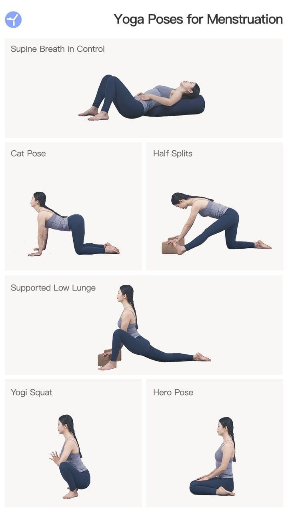
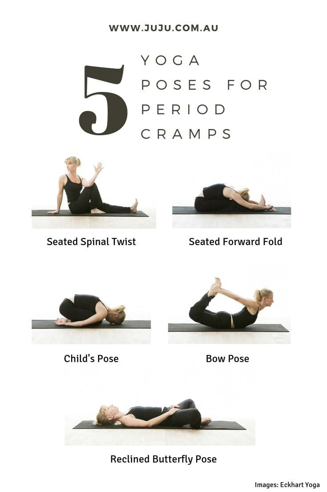
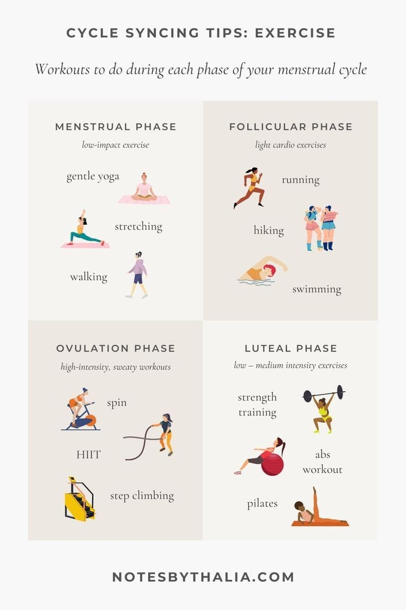

During lighter menstrual days, try moderate-intensity aerobic exercises like walking or light jogging. This type of physical activity can reduce bloating (extra water weight) and the pain of cramping. Aerobic exercise helps your blood circulation and the release of “feel-good hormones” called endorphins.
Here are a few exercises that you can do

A Few Yoga Poses

